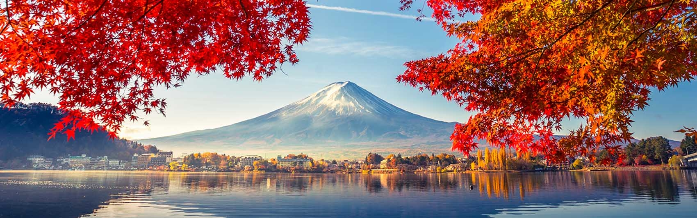
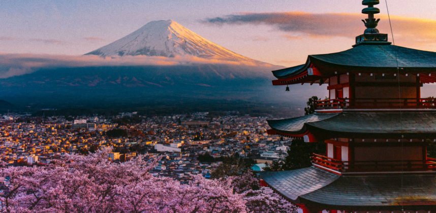

Japan
Places to visit
Japan is somewhere I think everyone should visit. From futuristic skyscrapers to tranquil bamboo forests and neon
arcades to serene temples, it’s like nowhere else on the planet.
The food is incredible, the people are ultra polite, and it has one of the most efficient public transport systems in
the world. We love the combination of ease of travel and glorious bewilderment.
Japan has so much to offer but where should you start? These are our picks for the absolute best places to visit in
Japan, perfect for your first or second trip to the country (plus suggestions for the repeat visits that are likely to
happen!).
1. Mount Fuji

Without a doubt Japan's most recognizable landmark, majestic Mount Fuji (Fuji-san) is also the country's highest
mountain peak. Towering 3,776 meters over an otherwise largely flat landscape to the south and east, this majestic and
fabled mountain is tall enough to be seen from Tokyo, more than 100 kilometers away.
Mount Fuji has for centuries been
celebrated in art and literature and is now considered so important an icon that UNESCO recognized its world cultural
significance in 2013. Part of the Fuji-Hakone-Izu National Park, Mount Fuji is climbed by more than a million people
each summer as an act of pilgrimage, which culminates in watching the sunrise from its summit.
While some still choose to begin their climb from the base, the majority of climbers now start from above the halfway
mark, at the 5th Station, resulting in a more manageable six-or-so-hour ascent. Those who do attempt the complete climb
are advised to depart in the afternoon, breaking up the climb with an overnight stop at one of the "Mountain Huts"
designed for this very purpose. An early start the next day gets you to the top for the sunrise.
Of course, for many, simply viewing the mountain from the distance, or from the comfort of a speeding train, is enough
to say "been there, done that."